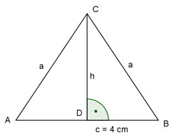

Aufgabe 52 Ein gleichschenkliges Dreieck hat eine Fläche von 10 cm2 und eine Grundseite von 4 cm. Wie groß ist die Höhe auf die Grundseite und ein Schenkel?  c * h 4 * h A = ------- = ------ = 2 * h |:2 2 2 A 10 h = --- = ---- = 5 cm 2 2 Sart von Pythagoras im Dreieck ADC: c a2 = h2 + (---)2 2 a2 = 52 + 22 a2 = 29 |√ a = 5,4 cm